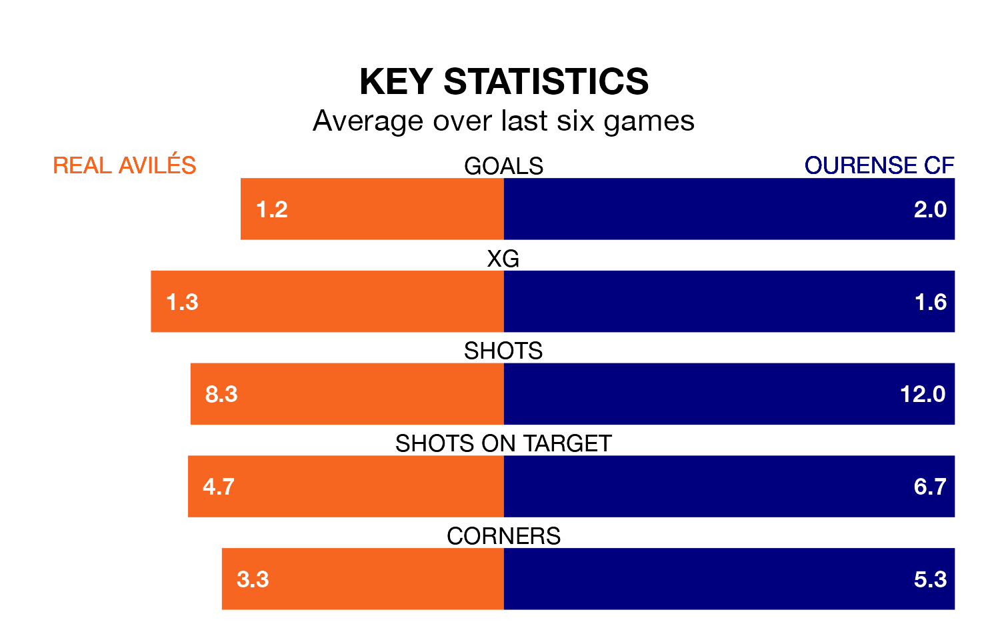

Ourense CF visit Real Avilés at the Estadio Román Suárez Puerta on early Sunday on the back of three consecutive wins in the Segunda División RFEF Group 1.
Ourense have picked up 14 points from their last six games, and they face an Avilés side who lost their last match, and have collected four points from the last possible 18.
Ourense are top of the table after 33 games, of which they have won 20 and drawn 10, earning 70 points.
Avilés are nine places behind the away team in 10th, with nine wins and 14 draws putting them on 41 points.
With 52 goals in 33 games so far this season, Ourense are the league's second-highest scorers with 1.6 goals per game. And they are conceding fewer than average, letting in 19 goals at a rate of 0.6 per game.
The hosts, meanwhile, are average scorers, with 1.2 goals per game. They have conceded 1.1 goals per game.
In the last three years, Avilés and Ourense have played each other on three occasions. Ourense won all of them.
Their last meeting was on January 6, when Ourense won 2-0 at home.
Avilés's last match was on April 28, a 3-1 loss against SD Compostela.
Ourense beat Real Oviedo B 2-0 last time out, also on April 28, with Jerin Marcolino Ramos Santos on the scoresheet.
Updated: 12:00 (UTC), 02/05/24